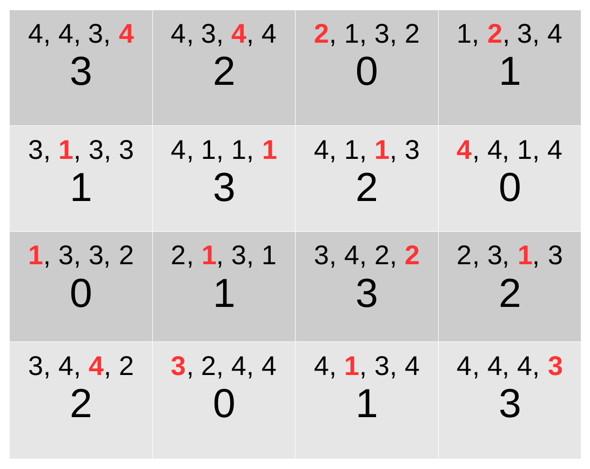

Weighted latin square problem
Brief description
The problem consists in assigning a value from 0 to N-1 to every cell of a NxN chessboard. Each row and each column must be a permutation of N values. For each cell, a random weight in (1…N) is associated to every domain value. The objective is to find a complete assignment where the sum of the weights associated to the selected values for the cells is minimized.
CFN model
We create NxN variables for all cells with domain size N. A hard AllDifferent global cost function is used to model a permutation for every row and every column. Random weights are generated for every cell and domain value. Forbidden assignments have cost k=N**3+1.
Example for N=4 in JSON .cfn format
{
problem: { "name": "LatinSquare4", "mustbe": "<65" },
variables: {"X0_0": 4, "X0_1": 4, "X0_2": 4, "X0_3": 4, "X1_0": 4, "X1_1": 4, "X1_2": 4, "X1_3": 4, "X2_0": 4, "X2_1": 4, "X2_2": 4, "X2_3": 4, "X3_0": 4, "X3_1": 4, "X3_2": 4, "X3_3": 4},
functions: {
{scope: ["X0_0", "X0_1", "X0_2", "X0_3"], "type:" salldiff, "params": {"metric": "var", "cost": 65}},
{scope: ["X1_0", "X1_1", "X1_2", "X1_3"], "type:" salldiff, "params": {"metric": "var", "cost": 65}},
{scope: ["X2_0", "X2_1", "X2_2", "X2_3"], "type:" salldiff, "params": {"metric": "var", "cost": 65}},
{scope: ["X3_0", "X3_1", "X3_2", "X3_3"], "type:" salldiff, "params": {"metric": "var", "cost": 65}},
{scope: ["X0_0", "X1_0", "X2_0", "X3_0"], "type:" salldiff, "params": {"metric": "var", "cost": 65}},
{scope: ["X0_1", "X1_1", "X2_1", "X3_1"], "type:" salldiff, "params": {"metric": "var", "cost": 65}},
{scope: ["X0_2", "X1_2", "X2_2", "X3_2"], "type:" salldiff, "params": {"metric": "var", "cost": 65}},
{scope: ["X0_3", "X1_3", "X2_3", "X3_3"], "type:" salldiff, "params": {"metric": "var", "cost": 65}},
{scope: ["X0_0"], "costs": [4, 4, 3, 4]},
{scope: ["X0_1"], "costs": [4, 3, 4, 4]},
{scope: ["X0_2"], "costs": [2, 1, 3, 2]},
{scope: ["X0_3"], "costs": [1, 2, 3, 4]},
{scope: ["X1_0"], "costs": [3, 1, 3, 3]},
{scope: ["X1_1"], "costs": [4, 1, 1, 1]},
{scope: ["X1_2"], "costs": [4, 1, 1, 3]},
{scope: ["X1_3"], "costs": [4, 4, 1, 4]},
{scope: ["X2_0"], "costs": [1, 3, 3, 2]},
{scope: ["X2_1"], "costs": [2, 1, 3, 1]},
{scope: ["X2_2"], "costs": [3, 4, 2, 2]},
{scope: ["X2_3"], "costs": [2, 3, 1, 3]},
{scope: ["X3_0"], "costs": [3, 4, 4, 2]},
{scope: ["X3_1"], "costs": [3, 2, 4, 4]},
{scope: ["X3_2"], "costs": [4, 1, 3, 4]},
{scope: ["X3_3"], "costs": [4, 4, 4, 3]}}
}
Optimal solution with cost 35 for the latin 4-square example (in red, weights associated to the selected values) :
{kind=link}
Python model generator
The following code using python3 interpreter will generate the previous example if called without argument. Otherwise the first argument is the dimension N of the chessboard (e.g. “python3 latinsquare.py 6”).
import sys
from random import randint, seed
seed(123456789)
def flatten(x):
result = []
for el in x:
if hasattr(el, "__iter__") and not isinstance(el, str) and not isinstance(el, tuple) and not isinstance(el, dict):
result.extend(flatten(el))
else:
result.append(el)
return result
def cfn(problem, isMinimization, initPrimalBound, floatPrecision=0):
globals_key_order = ["rhs", "capacity", "weights", "weightedvalues", "metric", "cost", "bounds", "vars1", "vars2", "nb_states", "starts", "ends", "transitions", "nb_symbols", "nb_values", "start", "terminals", "non_terminals", "min", "max", "values", "defaultcost", "tuples", "comparator", "to"]
print('{')
print('\tproblem: { "name": "%s", "mustbe": "%s%.*f" },' % (problem["name"], "<" if (isMinimization) else ">", floatPrecision, initPrimalBound))
print('\tvariables: {', end='')
for i,e in enumerate(problem["variables"]):
if i > 0: print(', ', end='')
print('"%s":' % e[0], end='')
if isinstance(e[1], int):
print(' %s' % e[1], end='')
else:
print('[', end='')
for j,a in enumerate(e[1]):
if j > 0: print(', ', end='')
print('"%s"' % a, end='')
print(']', end='')
print('},')
print( '\tfunctions: {')
for i,e in enumerate(flatten(problem["functions"])):
if i > 0: print(',')
if e.get("name") is not None: print('\t\t"%s": {scope: [' % e.get("name"), end='')
else: print('\t\t{scope: [', end='')
for j,x in enumerate(e.get("scope")):
if j > 0: print(', ', end='')
print('"%s"' % x, end='')
print('], ', end='')
if e.get("type") is not None:
print('"type:" %s, ' % e.get("type"), end='')
if e.get("params") is not None:
if isinstance(e.get("params"), dict):
print('"params": {', end='')
first = True
for key in globals_key_order:
if key in e.get("params"):
if not first: print(', ', end='')
if isinstance(e.get("params")[key], str): print('"%s": "%s"' % (str(key),str(e.get("params")[key]).replace("'", '"')), end='')
else: print('"%s": %s' % (str(key),str(e.get("params")[key]).replace("'", '"')), end='')
first = False
print ('}', end='')
else: print('"params": %s, ' % str(e.get("params")).replace("'",'"'), end='')
if e.get("defaultcost") is not None:
print('"defaultcost:" %s, ' % e.get("defaultcost"), end='')
if e.get("costs") is not None:
print('"costs": ', end='')
if isinstance(e.get("costs"), str):
print('"%s"' % e.get("costs"), end='') # reuse future cost function by giving its name here
else:
print('[', end='')
for j,c in enumerate(e.get("costs")):
if j > 0: print(', ', end='')
if isinstance(c, str) and not c.isdigit():
print('"%s"' % c, end='')
else:
print('%s' % c, end='')
print(']', end='')
print('}', end='')
print('}\n}')
def model(N, k):
Var = {(i,j): "X" + str(i) + "_" + str(j) for i in range(N) for j in range(N)}
LatinSquare = {
"name": "LatinSquare" + str(N),
"variables": [(Var[(i,j)], N) for i in range(N) for j in range(N)],
"functions":
[# permutation constraints on rows
[{"scope": [Var[(i,j)] for j in range(N)], "type": "salldiff", "params": {"metric": "var", "cost": k}} for i in range(N)],
# permutation constraints on columns
[{"scope": [Var[(i,j)] for i in range(N)], "type": "salldiff", "params": {"metric": "var", "cost": k}} for j in range(N)],
# random unary costs on every cell
[{"scope": [Var[(i,j)]], "costs": [randint(1, N) for a in range(N)]} for i in range(N) for j in range(N)]
]
}
return LatinSquare
if __name__ == '__main__':
# read parameters
N = int(sys.argv[1]) if len(sys.argv) > 1 else 4
# infinite cost
k = N**3+1
# dump problem into JSON .cfn format for minimization
cfn(model(N, k), True, k)